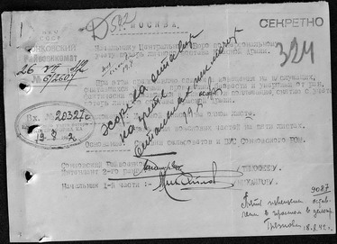
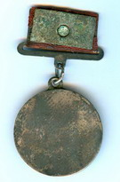
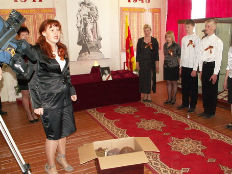

июль - август 2009 года
ФРОНТОВАЯ СУДЬБА СЕРЖАНТА ХОРЕВА
В начале июля в Фонд «Жить и Помнить» поступила информация от командира поискового отряда из Оленинского района Д. Жука о том, что при проведении поисковых работ на Украине членами молодежной Историко - поисковой организации «Поиск - Днепр» подняты останки нашего земляка Григория Алексеевича Хорева. Они были обнаружены в лесополосе около села Базавлучек Софиевского района Днепропетровской области. Вместе с останками поисковики нашли медаль «За боевые заслуги», по ней и установили имя воина.
В Книге Памяти Тверской области, Вышневолоцкий район, находим запись, которая гласит, что Хореев Григорий Алексеевич, 1920 года рождения, уроженец с. Беляницы Сонковского района Калининской области был призван в армию Вышневолоцким РВК в 1940 г. Погиб в феврале 1942 г., похоронен в пос. Сураж Витебской области. Выяснили, что основанием для этой записи о гибели Григория Алексеевича послужило донесение Управления 51 отдельной стрелковой бригады № 035 от 21 марта 1942 г. о безвозвратных потерях. В донесении указано, что сержант, командир отделения 3 отдельного стрелкового батальона Хореев Г.А. был убит в бою 2 февраля 1942 г. и захоронен в мес. Сураж Витебской области.
Справка: В эти дни 51 отд. стрелковая бригада 4 Ударной Армии в составе войск правого крыла Калининского (с 22 января 1942 г.) фронта участвовала в Торопецко - Холмской наступательной операции (9 января - 6 февраля 1942 г.). 9 января войска 3-й и 4-й Ударных Армий внезапно перешли в наступление и к 12 января, прорвав тактическую зону вражеской обороны, продвинулись на 25-30 км. 4-я Ударная Армия 16 января овладела г. Андреаполь, 21 января совместно с партизанами - г. Торопец, а передовыми частями перерезала ж. д. Великие Луки - Ржев. Войска 3-й Ударной Армии к 22 января окружили гарнизон противника в г. Холм и обошли демянскую группировку 16-й Армии противника с юга. В последующем 3-я и 4-я Ударные Армии развивали наступление на витебском и смоленском направлениях, в глубокий тыл группы армий "Центр". В первых числах февраля они вышли на подступы к Великим Лукам, Велижу и Демидову, а 249-я сд 4-й Ударной Армии прорвалась к Витебску. Стремясь остановить продвижение советских войск, немецкое командование выдвинуло против них 4 пехотных дивизии, переброшенные из Зап. Европы. Растянувшиеся на фронте около 300 км войска 3-й и 4-й Ударных Армий не смогли преодолеть возросшее сопротивление противника и 6 февраля перешли к обороне.
В результате этой операции войска продвинулись до 250 км, нарушили оперативное взаимодействие между группами армий "Север" и "Центр" и, обойдя с северо - запада ржевско-вяземскую, а с юга демянскую группировки противника, создали условия для их разгрома.
Вероятно, командованием батальона тогда же было выписано и отправлено на родину Григория Алексеевича извещение о его гибели. На самом деле тогда он не погиб. Это подтверждается и тем, что 27 июля 1942 г. военный комиссар Сонковского района направляет донесение Начальнику Центрального бюро по персональному учету потерь Красной Армии. В донесении сообщает, что сержант Хореев Г.А. жив, проходит службу в партизанском отряде и должен быть снят с учета потерь Красной Армии. Источник информации о нахождении Хорева Г.А. в партизанском отряде военный комиссар не указывает. Можно только предположить, что в семью от Григория Алексеевича пришло письмо.
На запрос украинских поисковиков в Центральный Архив МО РФ поступил ответ, в котором сообщалось, что сведения о его гибели в 1942 г., действительно, являются ошибочными, так как 30 мая 1943 г. старшему сержанту Хореву Григорию Алексеевичу была вручена медаль «За боевые заслуги» за номером 281639. В приказе командира 439 стрелкового полка 52 стрелковой дивизии № 02/н от 14 марта 1943 г. значится:
« От имени Президиума Верховного Совета СССР награждаю медалью «За боевые заслуги» командира расчета 1 минометной роты старшего сержанта Хорева Григория Алексеевича за проявленное мужество в бою 28 февраля 1943 г. в городе Барвенково, где под сильным артиллерийским обстрелом противника вел огонь, в результате чего рассеял и частично уничтожил группу пехоты до 30 человек. При выходе из боя под непрерывным огнем противника полностью вынес материальную часть».
Справка: 52-я Шумлинско-Венская Краснознаменная стрелковая дивизия
сформирована на базе 5-й сапбр в Коломне к 1 марта1942 г. В начале июня 1942г.переброшена из Коломны в район ст.Подсолнечная (Солнечногорск), где вошла в состав 4-й резервной Армии. 17 июля 1942 г. отправлена в Старицу, Высокое, в состав Калининского фронта, 1 января 1943 г. переброшена в состав
Юго-Западного фронта. На 1 февраля 1943 г. входила в состав 21 Армии Воронежского фронта. 3 февраля 1943 г. 21 Армия была выведена в резерв Ставки ВГК, 15 февраля — включена в состав Центрального фронта 2-го формирования, а 14 марта — переподчинена Воронежскому фронту.
В настоящее время останки Хорева Г.А. и еще трех бойцов поднятых вместе с ним из одной воронки находятся на временном хранении. Они будут захоронены в ближайшее время на месте, которое определят власти Софиевского района Днепропетровской области.
Представитель поисковой организации «Поиск - Днепр» С.В. Оверчук и мы обращаемся к жителям Сонковского района и всей области с просьбой о помощи в установлении близких родственников нашего земляка сержанта Хорева Г.А. Они должны знать его фронтовую судьбу, действительное место захоронения и заслуженная боевая награда героя должна быть передана его потомкам.
Медаль «За боевые заслуги» ст. сержанта ХОРЕВА Г.А.
Медаль учреждена Указом Президиума Верховного Совета СССР от 17 октября 1938 года для награждения за активное содействие успеху боевых действий, укрепление боевой готовности войск.
Награждение медалью “За боевые заслуги” производилось:
- За умелые, инициативные и смелые действия в бою, способствовавшие успешному выполнению боевых задач воинской частью, подразделением;
- За мужество, проявленное при защите государственной границы СССР;
За отличные успехи в боевой и политической подготовке, освоении новой боевой техники и поддержании высокой боевой готовности воинских частей и их подразделений и другие заслуги во время прохождения действительной военной службы.

ИРИНА ЕРЕМЕЕВА: Приоритет в работе – память о погибших воинах.
Решать задачи по поиску и увековечению памяти погибших защитников Отечества сотрудникам Фонда приходится в тесном контакте с различными структурами и организациями, в том числе с представителями исполнительной власти. И что греха таить, реакция на наши обращения бывает самая разная: от полного взаимопонимания до откровенного недоумения. Дескать, для кого это сегодня важно: некорректная запись в Книге Памяти, погиб солдат или пропал без вести, внесено или нет его имя на мемориальную плиту братской могилы, знают ли родственники о фронтовой судьбе, боевых наградах отца, деда, прадеда и том месте, где он принял свой последний бой. И еще многие, и многие вопросы, которые мы можем решить только сообща с властными структурами.
Таких проблем у Фонда никогда не возникало в Кимрском районе. И во многом благодаря тому, что в администрации района отдел по туризму, спорту и молодежной политике возглавляет, как говорят, человек на своем месте, Ирина Николаевна Еремеева. Она сотрудничает с Фондом уже несколько лет. За это время на территории не боевого Кимрского района на месте безымянных госпитальных могил стали появляться именные воинские захоронения, обретает новые имена Книга Памяти Кимрского района, ближе и понятнее для молодежи, да и всего населения района становится судьба не вернувшихся с войны земляков, трагический боевой путь сформированной на территории района 260 стрелковой дивизии. Память о павших воинах Ирина Николаевна называет одним из главных приоритетов в своей работе. Свидетельствуем - её слова не расходятся с делом.
О работе коллеги мы попросили рассказать заведующую организационным отделом администрации Кимрского района Галину Владимировну Фёдорову.
В начале 2005 года в администрацию района пришла молодая миловидная женщина. Представилась: Еремеева Ирина Николаевна.
Сказала, что хотела бы работать с молодёжью. В это время как раз была вакантна должность заведующего отделом по туризму, спорту, молодёжной политике.
И вскоре Ирина Николаевна была назначена на эту должность. Руководство не ошиблось, приняв это решение. Все направления деятельности: и спорт, и туризм, и работу с молодёжью Ирине Николаевне пришлось начинать, по сути дела, с ноля.
Однако теперь о районе с полным основанием можно говорить как территории спортивной, как территории, серьёзно заявившей о развитии туризма. О достижениях в этих сферах свидетельствуют кубки, дипломы, выигранные гранты, участие в мероприятиях и областного, и республиканского масштаба.
В работе с молодёжью Ирина Николаевна нашла верное направление: воспитание гражданственности, общественной активности и общественной ответственности.
Самое серьёзное внимание с первых дней работы Еремеева И.Н. уделяет патриотическому, военно –патриотическому воспитанию.
С 2006 года в районе установлено 10 новых памятников воинам – землякам, погибшим в годы Великой Отечественной войны.
Многие памятники, установленные ранее, отремонтированы, благоустроены территории, прилегающие к ним. В этой работе участвуют школьники, сельская молодёжь.
С приходом Ирины Николаевны новое дыхание приобрела поисковая работа. Она сама ведёт обширную переписку с поисковыми отрядами, с военкоматами, с общественными организациями патриотического направления. Через своё сердце она пропускает судьбу погибших земляков, не жалеет сил, чтобы вырвать их из небытия.
Характерный пример весны этого года. Поисковый отряд города Выборг нашёл останки нашего земляка сержанта Синюшкина Н.В., считавшегося пропавшим без вести с 1944 года.
Получив эти сведения, Ирина Николаевна сама поехала в Выборг, привезла останки сержанта. 6 мая, в канун 64 годовщины Победы, останки были захоронены со всеми воинскими почестями, по православным традициям, в присутствии родственников Синюшкина Н.В., на его родине, в селе Горицы.
Благодаря неустанной работе Еремеевой И.Н. и её организаторским способностям район принимает активное участие во всех масштабных акциях патриотической направленности: «Память», «Георгиевская ленточка», «Солдатский платок», «Дети погибших защитников Отечества», «Я – патриот» и др.
В настоящее время Ирина Николаевна по крупицам собирает материалы о трагедии 260 стрелковой дивизии, с которой связана судьба многих и многих наших земляков.
Ирина Николаевна к любому делу относится с душой. К воспитанию молодёжи – особенно. Молодёжь ей верит, молодёжь идёт за ней. У Ирины Николаевны много планов и интересных задумок. Реализовать их теперь ей будет легче: недавно Еремеева И.Н. назначена заместителем главы администрации района.
Мы, её коллеги, и равняемся на неё, и гордимся ею, и желаем дальнейшей успешной работы.
|